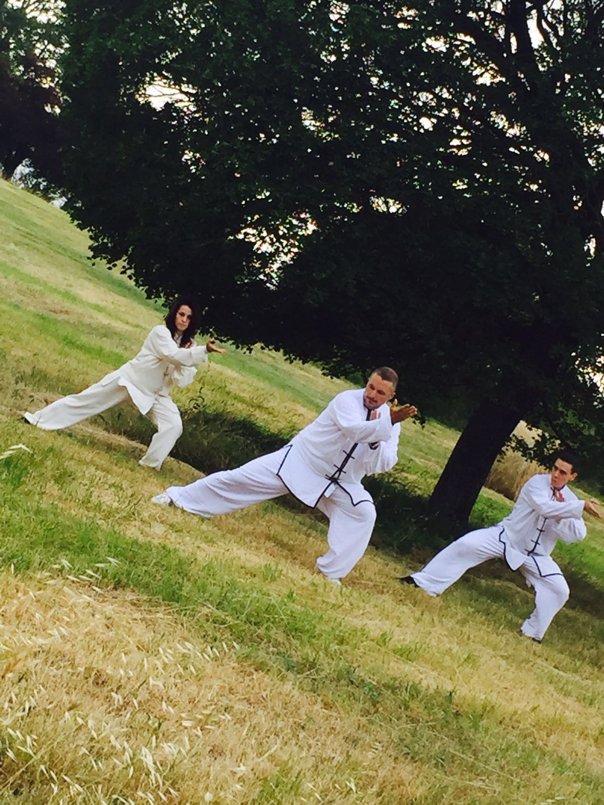
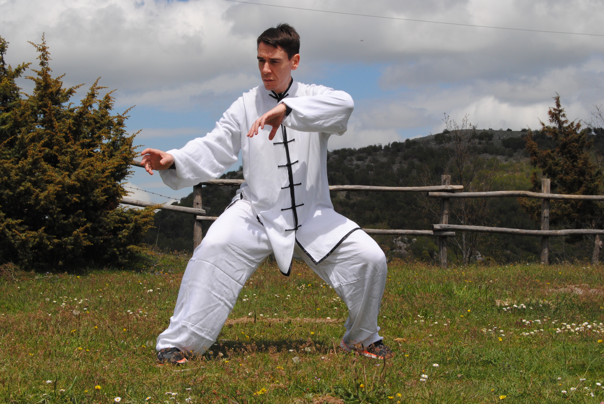
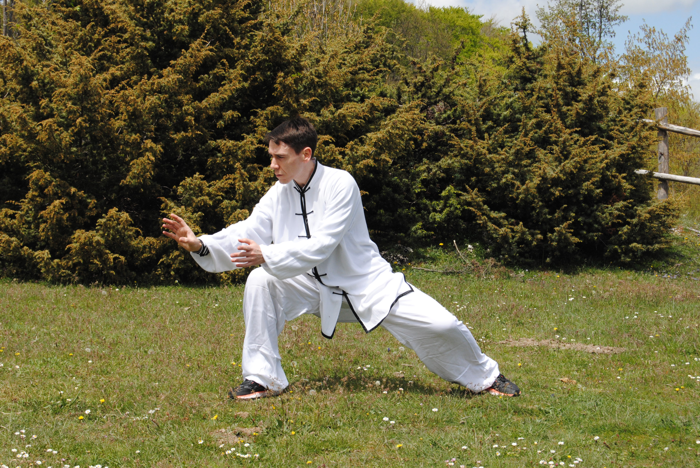
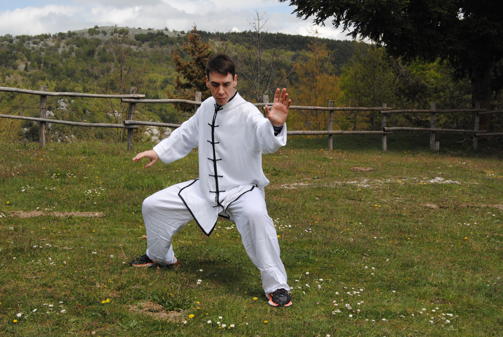

Il corso di Tai Chi si rivolge a tutti coloro che si pongono l’obiettivo di liberarsi dallo stress del quotidiano unito al piacere di acquisire i concetti fondamentali di vera Arte Marziale alla scoperta di quell’Io interiore e dell’energia vitale, detta CHI, che viene sollecitata e potenziata attraverso la pratica di questa “ginnastica di lunga vita”. Così infatti viene definita da molti studiosi che hanno dimostrato l’efficacia della pratica a tutti i livelli, da quello puramente fisico, mentale fino a quello curativo. Infatti, molte patologie, da quelle neurovegetative fino a quelle tipiche di un’età più avanzata, hanno riscontrato beneficio clinico scientificamente dimostrato.
Immergiti nei benefici del Tai Chi e scopri un percorso unico verso il benessere fisico e mentale, con vantaggi che includono:
- Equilibrio migliorato: attraverso movimenti fluidi e controllati, svilupperai un senso di equilibrio armonioso.
- Riduzione dello stress: abbraccia sequenze lente e consapevoli per alleviare lo stress e promuovere una mente serena.
- Forza muscolare rafforzata: sperimenta l'armoniosa fusione tra movimenti a basso impatto e il potenziamento di tutti i gruppi muscolari.
- Respirazione profonda: abbraccia la respirazione profonda e consapevole per migliorare la capacità polmonare e la tua vitalità.
- Flessibilità e postura migliorate: attraverso esercizi di allineamento, migliorerai la flessibilità e otterrai una postura più eretta.
- Benefici cardiovascolari: studi indicano che il Tai Chi può contribuire a ridurre la pressione sanguigna, migliorando la salute del cuore.
- Concentrazione potenziata: affina la tua concentrazione attraverso una pratica che richiede attenzione e consapevolezza.
- Benessere mentale: sperimenta un mix di movimenti lenti, respirazione controllata e calma mentale per il tuo benessere generale.
